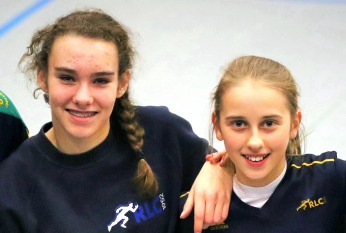

KLASSEAUFTRITT DER U16-JUGEND!

Beim Hallenwettkampf am 29.01.2017 in Dortmund zur Vorbereitung der Westf. U16-Meisterschaften am 25.02.2017 in Paderborn schnitten die von Sabine Kruse und Uschi Götz-Trogemann trainierten Jugendlichen der Jahrgänge 2002 und 2003 mal wieder so richtig gut ab.